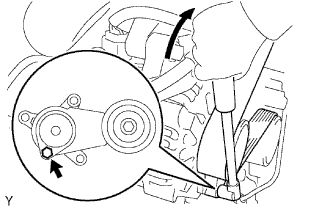
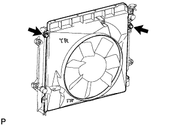
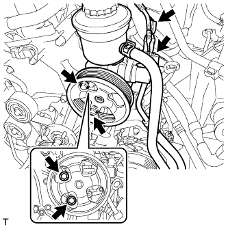

КОМПРЕССОР (для моделей с 2TR-FE) > СНЯТИЕ |
| 1. СНИМИТЕ ВЕРХНЕЕ УПЛОТНЕНИЕ КРОНШТЕЙНА РАДИАТОРА |
Освободите 13 фиксаторов и снимите верхнее уплотнение кронштейна радиатора.
| 2. СОБЕРИТЕ ХЛАДАГЕНТ ИЗ СИСТЕМЫ ОХЛАЖДЕНИЯ |
Запустите двигатель.
Включите компрессор системы кондиционирования в следующих условиях:
| Параметр / Устройство | Состояние |
| Частота вращения коленчатого вала двигателя | Холостой ход |
| Время работы | 3 мин или более |
| Состояние выключателя системы кондиционирования | Вкл |
| Состояние переключателя вентилятора | HI |
| Заданная температура | MAX COOL |
Выключите двигатель.
Соберите хладагент из системы кондиционирования с помощью установки регенерации хладагента.
| 3. СНИМИТЕ НИЖНЮЮ НАКЛАДКУ ПЕРЕДНЕГО БАМПЕРА |
Освободите фиксатор, выверните 5 болтов и снимите нижнюю облицовку переднего бампера.
| 4. СНИМИТЕ ЗАЩИТУ КАРТЕРА ДВИГАТЕЛЯ № 1 В СБОРЕ |
 |
Выверните 4 болта.
Отсоедините защиту картера двигателя от кузова автомобиля, как показано на рисунке.
| 5. СЛЕЙТЕ ОХЛАЖДАЮЩУЮ ЖИДКОСТЬ ДВИГАТЕЛЯ |
| *1 | Пробка расширительного бачка | *2 | Пробка радиатора |
| *3 | Пробка сливного крана блока цилиндров | *4 | Пробка сливного крана радиатора |
 |
Установите виниловый шланг со стороны радиатора.
| *1 | Виниловый шланг |
 |
Установите виниловый шланг со стороны двигателя.
| *1 | Виниловый шланг |
Ослабьте пробку сливного крана радиатора.
Снимите пробку радиатора и слейте охлаждающую жидкость.
Ослабьте пробку сливного крана блока цилиндров и слейте охлаждающую жидкость из двигателя.
| 6. СНИМИТЕ РАСШИРИТЕЛЬНЫЙ БАЧОК РАДИАТОРА |
 |
Отсоедините шланг бачка от радиатора.
Выверните 3 болта и снимите расширительный бачок радиатора.
| 7. СНИМИТЕ ПАТРУБОК РАДИАТОРА № 1 |
 |
Отсоедините патрубок радиатора № 1 от радиатора.
| 8. СНИМИТЕ ПАТРУБОК РАДИАТОРА № 2 |
 |
Отсоедините патрубок радиатора № 2 от радиатора.
| 9. СНИМИТЕ ПОЛИКЛИНОВОЙ РЕМЕНЬ ВЕНТИЛЯТОРА И ГЕНЕРАТОРА |
|  |
С помощью шестигранника, указанного на рисунке стрелкой, сдвиньте шкив натяжителя вниз, уменьшив тем самым натяжение поликлинового ремня. Затем снимите поликлиновой ремень.
| 10. СНИМИТЕ КОЖУХ ВЕНТИЛЯТОРА |
 |
Отсоедините захват, чтобы разомкнуть зажим гибкого шланга.
 |
Ослабьте 4 гайки, крепящие вентилятор вискомуфты.
Снимите поликлиновой ремень вентилятора и генератора (Нажмите здесь).
|  |
Выверните 2 болта, крепящие кожух вентилятора.
Отверните 4 гайки вентилятора вискомуфты, а затем снимите кожух вместе с вентилятором вискомуфты.
| 11. ОТСОЕДИНИТЕ ЛОПАСТНОЙ НАСОС В СБОРЕ |
 |
Выверните болт и отсоедините нагнетательный патрубок.
|  |
Отсоедините 2 разъема.
Выверните 2 болта и отсоедините лопастной насос.
| 12. ОТСОЕДИНИТЕ ТРУБОПРОВОД ВЫСОКОГО ДАВЛЕНИЯ В СБОРЕ |
Выверните болт и отсоедините трубопровод высокого давления в сборе от компрессора.
| *A | кроме моделей с кодами TRJ150L-GKMEKV, TRJ150L-GKPEKV, TRJ155L-GJPEKV |
| *B | для моделей с кодами TRJ150L-GKMEKV, TRJ150L-GKPEKV, TRJ155L-GJPEKV |
Снимите с трубопровода высокого давления кольцевое уплотнение.
| 13. ОТСОЕДИНИТЕ ТРУБКУ НИЗКОГО ДАВЛЕНИЯ В СБОРЕ |
Выверните болт и отсоедините трубопровод низкого давления в сборе от компрессора.
| *A | кроме моделей с кодами TRJ150L-GKMEKV, TRJ150L-GKPEKV, TRJ155L-GJPEKV |
| *B | для моделей с кодами TRJ150L-GKMEKV, TRJ150L-GKPEKV, TRJ155L-GJPEKV |
Снимите со трубопровода низкого давления кольцевое уплотнение.
| 14. СНИМИТЕ КОМПРЕССОР СИСТЕМЫ КОНДИЦИОНИРОВАНИЯ В СБОРЕ |
Отсоедините разъем.
Выверните 4 болта и снимите компрессор.